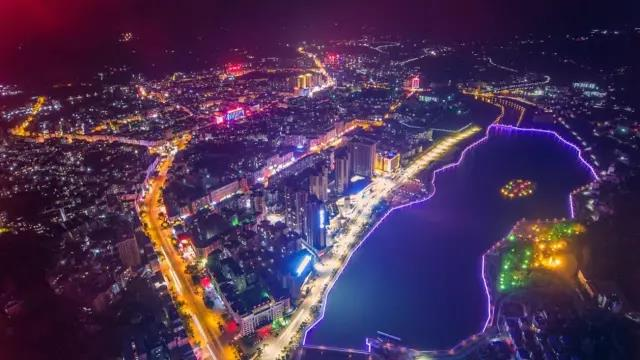
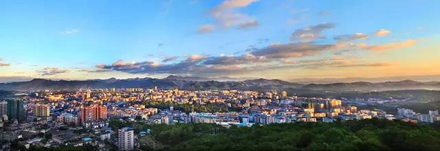

翁源概述
翁源县位于韶关市东南部，东与连平县相连，南与新丰县交界，西与英德市、曲江区接壤，北与始兴县、江西省毗邻。公元554年梁朝分浈阳县地置，元初并入曲江县，公元1303年复置。是广东历史上最早建制的16个县之一。是抗倭英雄陈璘故乡。2016年年末户籍人口412214人，全县总面积2175平方公里。辖7镇1场156个村（工区）委会。县领导机关驻龙仙镇。地形以山地和盆地为主。属中亚热带季风气候。耕地面积1.9万公顷，有林地面积16.3万公顷，森林覆盖率63.1%。河流以北江支流翁江及其支流为主。水力资源理论蕴藏量为13.8万千瓦。煤、铁、铅、锌、钨等矿产资源丰富。风景名胜有东华山、水龙宫、仙狮洞、书堂石、湖心坝客家群楼和葸茅岭八卦围等。农作物以水稻、蔬菜、甘蔗、花生、大豆为主。三华李、六里柑、九仙桃等水果久负盛名，是“中国三华李之乡”、“中国九仙桃之乡”、“中国兰花之乡”。 2016年，是“十三五”规划开局和换届之年，是我县主动作为，积极应对经济下行压力，实现经济稳中有进的一年。在上级党委、政府和县委的正确领导下，在县人大、县政协的监督支持下，我们团结和带领全县人民，实施百日攻坚，推动项目加快建设；以全市县域发展工作现场会在我县成功召开为契机，狠抓各项工作落实，较好完成了县第十四届人民代表大会第六次会议确定的各项目标任务。
经济主要指标平稳增长。生产总值实现98.2亿元，增长8.3％，增速排名全市第三。其中，第一产业增加值24亿元，增长4.5％；第二产业增加值30.5亿元，增长6.3％；第三产业增加值43.7亿元，增长11.9％。地方财政一般预算收入实现3.98亿元。全社会固定资产投资完成69.5亿元，增长9.1％。城乡居民人均可支配收入实现1.6万元，增长10.6%。
工业经济持续壮大。成功举办翁源主动融入珠三角投资环境推介暨第一届“中国兰花之乡”（东莞）兰博会、“中国兰花之乡·翁源”兰博会。全市产业园区工作现场会在我县召开。翁源产业转移工业园被成功认定为省产业转移工业园、工信部产业集群区域品牌建设试点单位，在全省起步园考核中位居第一。各专业园区配套设施进一步完善，翁城商务中心区厚源商务大厦主体工程顺利封顶。重点企业和地方特色企业支撑明显，在全县71家规上企业中，产值累计超5000万元的企业有44家，其中超亿元的企业达26家。全县共引进5000万元以上项目6个，其中超亿元项目2个，新增试产或投产企业11家，培育规上企业6家。
农业生态协调发展。粤台农业园区完成固定资产投资1.5亿元，完成搭建温控大棚11万平方米，完成土地流转500亩，完成新签约农业招商项目7个，合同投资额2亿元，全省粤台农业合作园区工作现场会在我县召开，我县粤台园区建设经验获得肯定和推广。成功获得了2018年第28届中国兰花博览会举办权。全县现代农业发展取得新突破，成功创建国家农产品质量安全县，成为全国第一批、全市唯一、全省四个国家农产品质量安全县之一。成功创建全国休闲农业与乡村旅游示范县，成为年度全市唯一、全省两个示范县之一。新增市级农业龙头企业2家、县级示范社4家、市级示范家庭农场10家、县级示范家庭农场11家。完成高标准农田建设项目3.5万亩，耕地保有量为47.2万亩，基本农田面积42.9万亩。林业生态建设初显成效，完成了林业生态红线划定工作，完成22个乡村绿化美化示范点建设，完成滃江源国家湿地公园湿地植被恢复试验工作，完成了湿地公园详细性规划、可行性研究报告等前期相关工作。中小河流治理完成投资1.4亿元，完成梯子岭等5座小型水库除险加固工作。认真落实主要污染物减排工作，积极推进环境综合治理，严厉打击了各类环境违法行为。
Copyright © Hejom 2017 by www.hejom.win all rights reserved
未经授权禁止转载，摘编，复制或者建立镜像，违者必究法律责任
phone:0751-2681000 Emai:1516161651@163.com